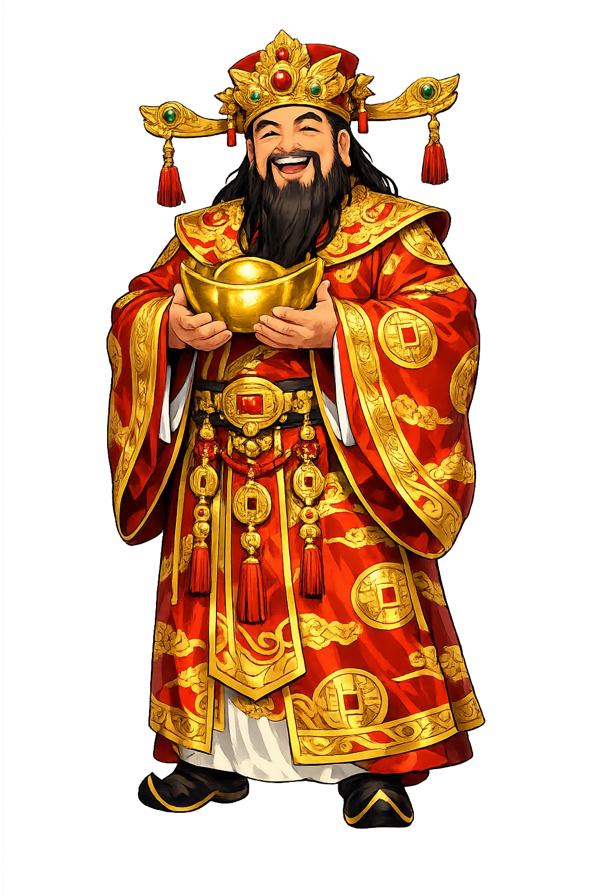
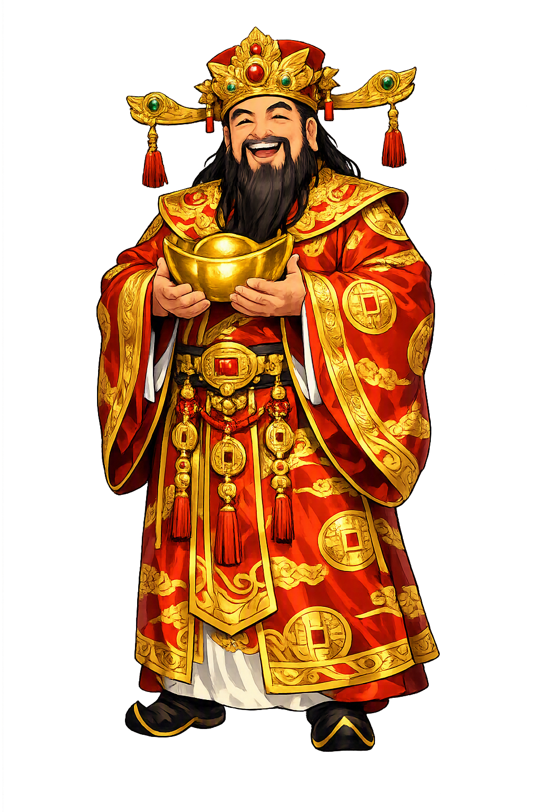

Stories of Cáishén
Cáishén's mythology is young and openly composite. The cult is a Song-dynasty growth over older roots, and every avatar brings his own story: a Ming novel supplies the marshal, a Han historian the heartless minister, merchants the retired sage. The tradition never pretends otherwise — and its honesty is part of its power.
The two characters 財神 simply mean 'god of wealth' — a title, not a personal name, and the tradition treats it that way. There is no canonical birth-story of Cáishén; instead, the office has been filled, again and again, by figures the culture wished to honor: a loyal minister, a canonized marshal, an honest merchant, even the red-faced war-god Guan Yu in some regions. The clearest early attestations belong to the Song dynasty (960–1279), when China's commercial revolution made wealth a god worth petitioning; the Ming-era compendium Santjiao soushen daquan and the novel Fengshen Yanyi then fixed the cast of avatars. The sources disagree openly about who 'really' holds the office — which is the honest thing for a god of fortune, since every trade, region, and dynasty wants to claim him. A god with many faces is a god owned by many classes; Cáishén's multiplicity is the theology of a civilization that decided prosperity itself was divine.
The fullest avatar-story comes from the Ming novel Fengshen Yanyi (Investiture of the Gods). During the fall of the Shang dynasty, Zhao Gongming, a hermit of Mount Emei, comes down to aid the doomed house with his black tiger, his iron whip, and his magic pearls; battle after battle turns on his power, until Jiang Ziya's side breaks him with Lu Ya's sorcery — an effigy of straw pierced by arrows. When the war ends and the fallen are canonized, Jiang Ziya invests the dead marshal as the God of Wealth, true lord of the dragon-tiger altar, mounted on his tiger, whip in hand, gold ingot ready — with four assistant deities who manage the welcoming of treasure, the gathering of valuables, the inviting of wealth, and the profiting of markets. The novel turns fortune into a bureaucracy: wealth flows not from luck but from an office, staffed, audited, and answerable — a very Chinese answer to the oldest of prayers.
The civil face of the god descends from an atrocity recorded by Sima Qian in the Shiji (c. 90 BCE, 'Basic Annals of Yin'). Bi Gan, uncle and chief minister of King Zhou of Shang, remonstrated against the tyrant's cruelties until the king, goaded on by his favorite Daji, ordered the minister's heart cut out — to test the old claim that a sage's heart has seven openings. Because Bi Gan died heartless, later tradition reasoned, he is beyond greed: no bribe reaches a god who has no heart to desire one. He became the Civil God of Wealth, the form merchants and bankers trust, usually shown in an official's robes holding a ruyi scepter and a scroll. The logic is ruthless and perfectly practical: the only trustworthy custodian of wealth is the man whose desire for it has been surgically removed — a parable about greed built on a mutilation, and one of the darkest etiologies any god carries.
A third avatar rises from honest trade. Fan Li — again from Sima Qian — was the strategist who destroyed the rival state of Wu and saved Yue, then refused office and reward, changed his name, and took to commerce; he grew rich, gave it all away, started over, and did this three times, dying in comfort at last under the name Tao Zhu Gong. Merchants made him Cáishén because his fortune was a skill, not a windfall, and because he spent as brilliantly as he earned. Where Bi Gan's wealth is incorruptible and Zhao's is martial, Fan Li's is mercantile: prosperity as craft plus generosity. The choice of a retired official for the marketplace form of the god says something careful about Chinese commerce — that it does not entirely trust itself, and wants its wealth-god to be a man who walked away from power, made money in the open, and let it go.
The living myth is a calendar custom. On the fifth day of the first lunar month — po wu, 'breaking the five' — Cáishén makes his annual circuit, and every shop and household races to be the first to welcome him. At midnight before, firecrackers tear the dark open; the paper icon that watched over the old year is burned to send the god on his way; dumplings are eaten 'to pinch the villain's mouth' shut. The folk tale behind the noise tells of a merchant so poor his only offering was a single stick of incense — and the god, pleased by the welcome and not the wealth, made his fortune. Businesses time their reopening to the day; the first trade of the year is literally kept by the god's schedule. It is the theology of a merchant culture in one image: fortune is real, it circulates, and it favors the one who stays up past midnight, firecracker in hand, at the door to receive it.
Wealth, Prosperity, New Year
Cáishén (財神, 'God of Wealth') is less a single god than an office, filled across the centuries by a canonized marshal, a heartless minister, and an honest merchant. He presides over trade, treasure, and the New Year, when every household races to be the first to welcome him.
Zhao Gongming: black tiger, iron whip, gold ingot — the Martial God of Wealth canonized in the Fengshen Yanyi.
Bi Gan, the Shang minister whose heart King Zhou cut out; without a heart, he cannot be greedy, so merchants trust him.
On the fifth day of the New Year, businesses reopen with firecrackers to be first to receive him.
Worshipped in sets of five — the Five Gods of Wealth, bringing fortune from every direction of the compass.
From the original script to the living URL
財神
The name in its original Chinese form. Cáishén (財神) is attested in the source tradition — “God of wealth”. Its acute stress marks carry the full phonetic and orthographic weight of the source tradition.
caishen
Reduced to plain caishen, the name loses everything that made it specific: acute stress marks. What remains is an ASCII string that machines can parse but that no longer speaks with its original voice.
Cáishén
The Unicode restoration recovers what ASCII flattened. Cáishén restores acute stress marks, returning the name to its original written dignity. The domain encodes to Punycode, but the browser displays the truth.
Cáishén.com → xn--cishn-xqa3d.com
The non-ASCII characters in Cáishén are encoded while the ASCII remains visible. To the DNS, it is Punycode. To humanity, it is Cáishén.
Owned, ideal, and ASCII forms of Cáishén
Cáishén
Restores 財神. The live temple domain — cáishén.com.
caishen
Flattens 財神. The plain ASCII fallback — what DNS and legacy systems see.
How Cáishén was spoken
How Cáishén is preserved in writing
A bespoke provenance study for Cáishén is being prepared by the PUNICODEX scholarly team.
Contribute scholarly provenance →Cáishén is a mirror. A civilization's wealth-god shows what that civilization thinks wealth is: the Greeks had Ploutos, a blind boy; Rome had Fortuna, a wheel; China built a bureaucracy. Marshal Zhao on his tiger says wealth has teeth; Bi Gan's missing heart says wealth corrupts; Fan Li's three fortunes say wealth is a craft; the four assistants — welcome treasure, gather valuables, invite wealth, profit the market — say it is, above all, an office with paperwork.
Enter Extended Lore